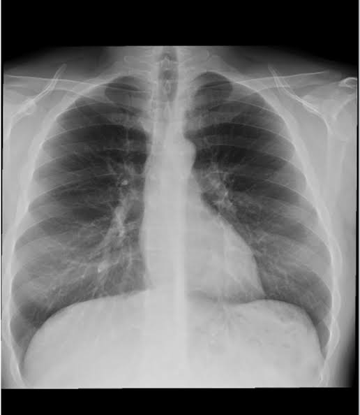

My health report

Upload Date: 2025-05-17
Result: Signs of pneumonia detected
Comment:
The X-ray shows patchy infiltrates in the right lower lung zone. Recommend further clinical evaluation and possible antibiotics. Student should follow up with the university clinic.